Ogni contributo verifica fonti primarie e indica cosa cambia per il destinatario. Mai marketing, mai pareri travestiti.
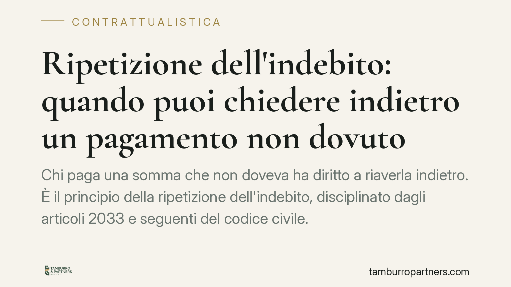
Chi paga una somma che non doveva ha diritto a riaverla indietro. È il principio della ripetizione dell'indebito, disciplinato dagli articoli 2033 e seguenti del codice civile. Dis…
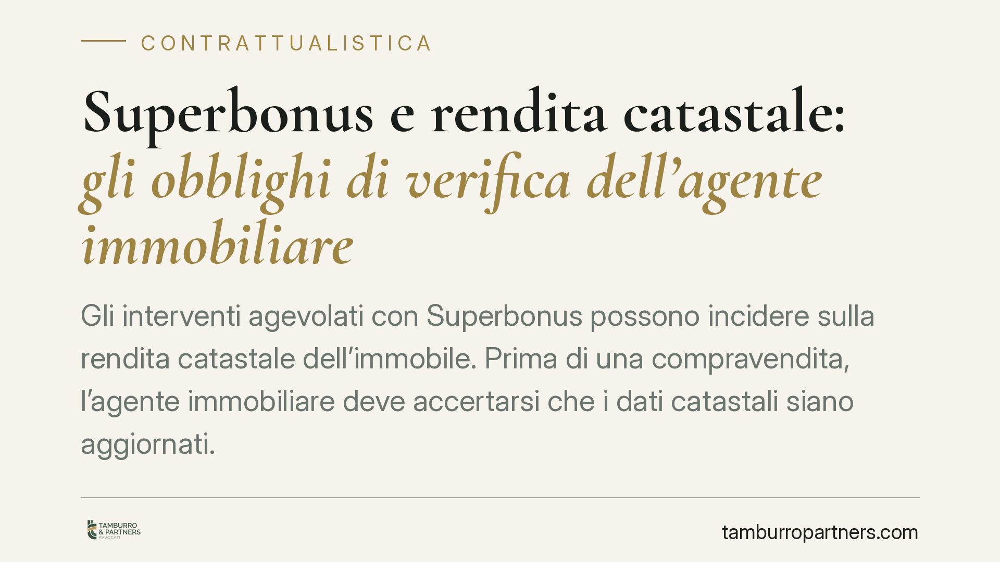
Gli interventi agevolati con Superbonus possono incidere sulla rendita catastale dell'immobile. Prima di una compravendita, l'agente immobiliare deve accertarsi che i dati catastal…
La Corte di Cassazione, Sezione Lavoro, torna sul rapporto tra processo penale e sanzioni disciplinari. Il patteggiamento è prova qualificata dei fatti, utilizzabile dal datore per…
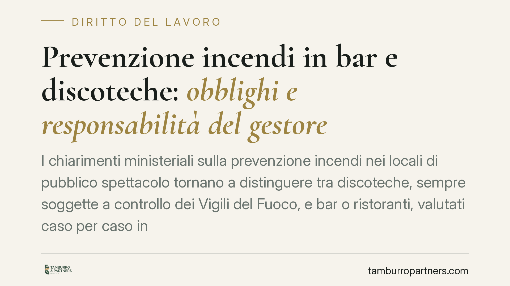
I chiarimenti ministeriali sulla prevenzione incendi nei locali di pubblico spettacolo tornano a distinguere tra discoteche, sempre soggette a controllo dei Vigili del Fuoco, e bar…
L'assemblea condominiale è la sede in cui i condomini decidono sulla gestione dell'edificio. Ma non sempre chi siede al tavolo è un proprietario. Delegati, usufruttuari e inquilini…
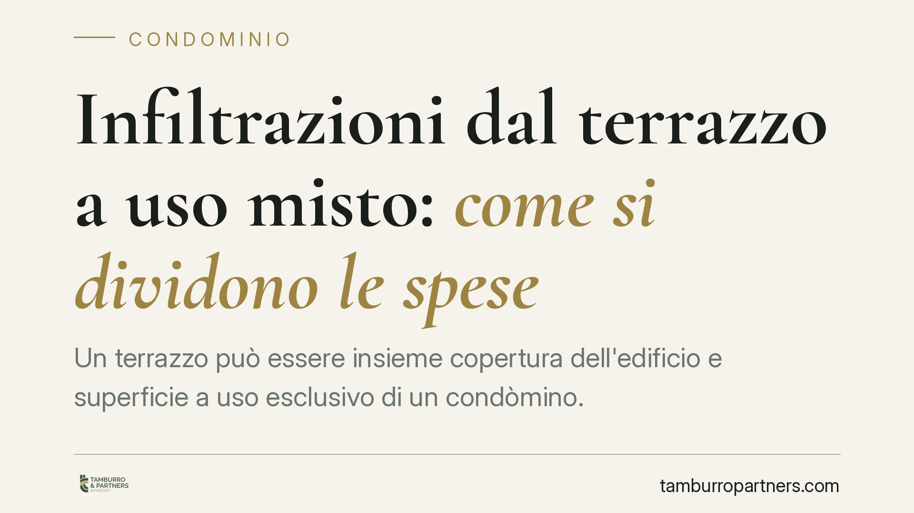
Un terrazzo può essere insieme copertura dell'edificio e superficie a uso esclusivo di un condòmino. Quando da lì partono infiltrazioni verso gli appartamenti sottostanti, la doman…
L'inquilino esposto ai rumori dei vicini non è privo di tutele, ma deve muoversi su piani distinti: civile, amministrativo e penale. Ciascuno ha presupposti e prove diverse. Compre…
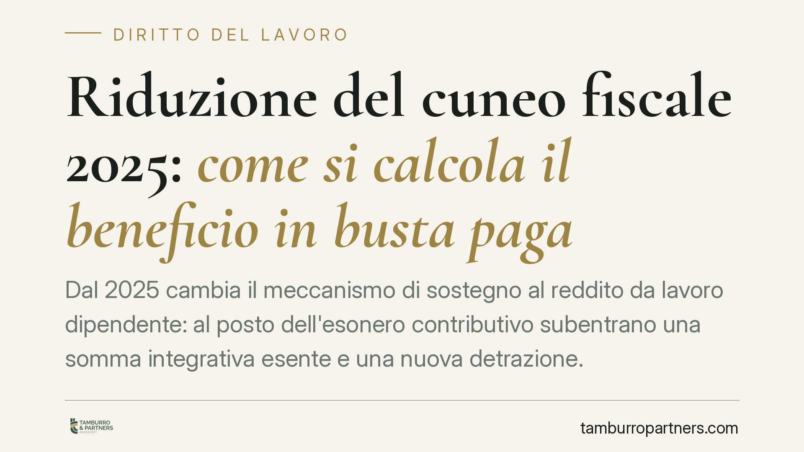
Dal 2025 cambia il meccanismo di sostegno al reddito da lavoro dipendente: al posto dell'esonero contributivo subentrano una somma integrativa esente e una nuova detrazione. La cir…
Il lavoratore in malattia deve restare reperibile per il controllo medico INPS in fasce orarie precise. L'assenza ingiustificata comporta sanzioni economiche pesanti e, nei casi pi…
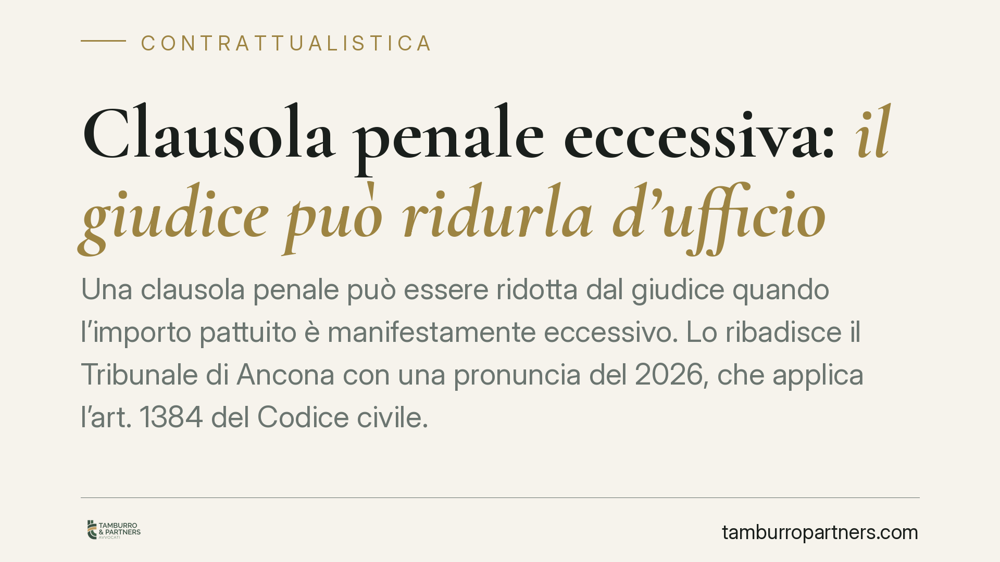
Una clausola penale può essere ridotta dal giudice quando l'importo pattuito è manifestamente eccessivo. Lo ribadisce il Tribunale di Ancona con una pronuncia del 2026, che applica…
Un carabiniere che anticipa a un'impresa l'arrivo di un'ispezione in cantiere commette rivelazione di segreto d'ufficio. La soffiata frustra i controlli su sicurezza e lavoro irreg…
Chi ha già maturato il diritto alla pensione anticipata ordinaria non può servirsi di Opzione donna per ottenere un assegno più alto: il calcolo contributivo del regime tende, al c…
I Comuni non possono affidare incarichi dirigenziali a professionisti esterni senza aver prima verificato l'idoneità del personale interno. Lo ribadisce la Cassazione in materia di…
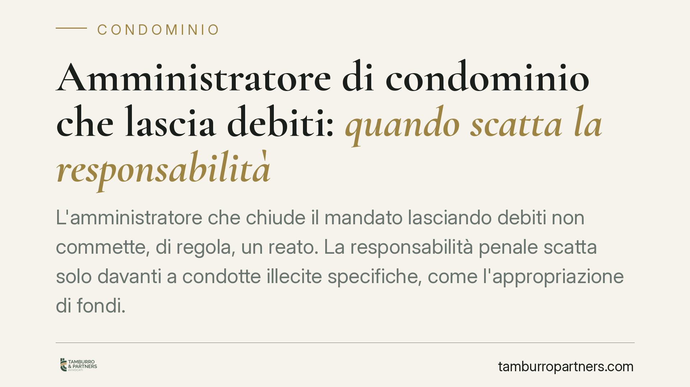
L'amministratore che chiude il mandato lasciando debiti non commette, di regola, un reato. La responsabilità penale scatta solo davanti a condotte illecite specifiche, come l'appro…
Il Tribunale di Milano ha respinto la pretesa dell'INPS di recuperare la NASpI da un'ex dipendente che aveva aperto una Partita IVA rimasta senza redditi. Il principio è netto: con…
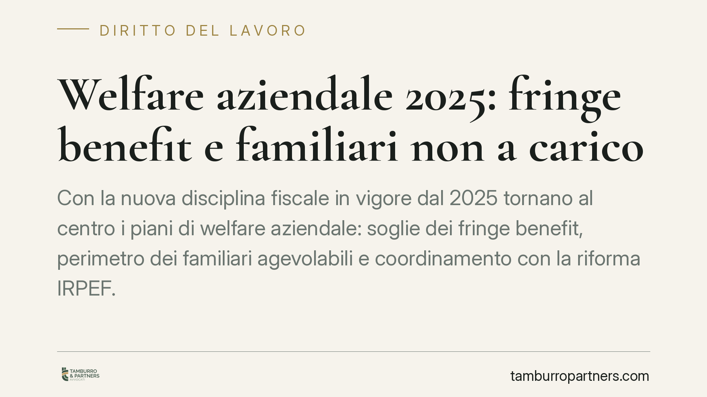
Con la nuova disciplina fiscale in vigore dal 2025 tornano al centro i piani di welfare aziendale: soglie dei fringe benefit, perimetro dei familiari agevolabili e coordinamento co…
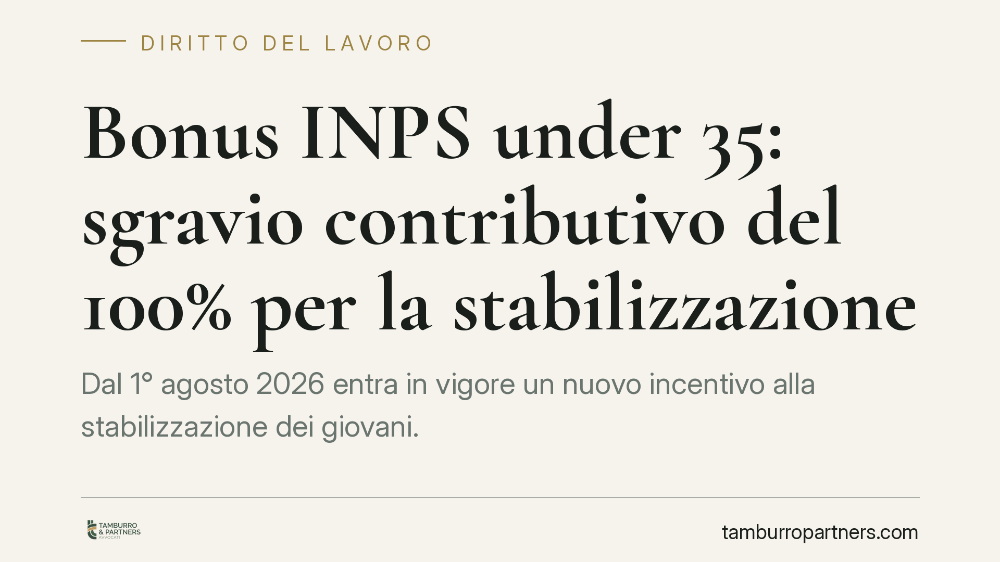
Si torna a parlare di incentivi alla stabilizzazione dei giovani, con l'ipotesi di un esonero contributivo integrale a favore dei datori che trasformano contratti a termine in temp…
La differenza tra lavoro subordinato e autonomo non si decide sulla carta. Una recente pronuncia della sezione lavoro del Tribunale di Avellino ribadisce un principio consolidato: …
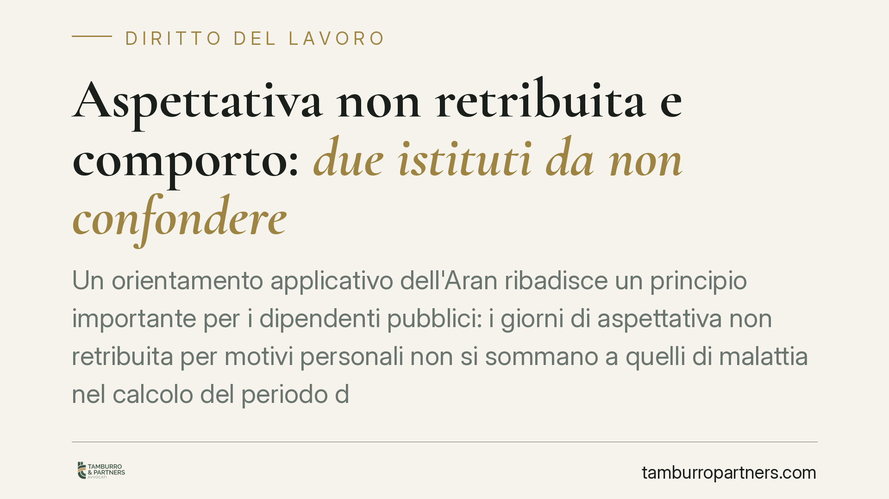
Un orientamento applicativo dell'Aran ribadisce un principio importante per i dipendenti pubblici: i giorni di aspettativa non retribuita per motivi personali non si sommano a quel…
Il singolo condomino può installare pannelli fotovoltaici sul tetto comune, ma la facoltà incontra limiti precisi fissati dal Codice civile e chiariti dalla giurisprudenza. Serve r…
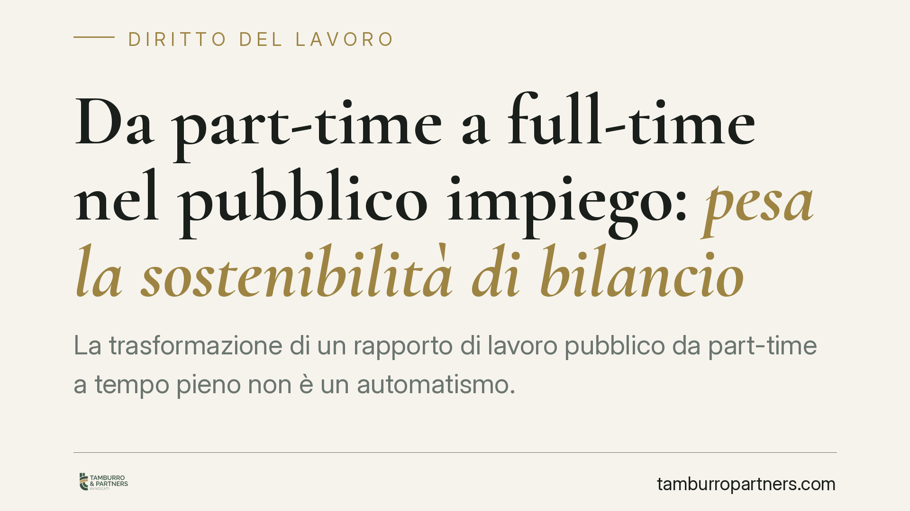
La trasformazione di un rapporto di lavoro pubblico da part-time a tempo pieno non è un automatismo. Per la Corte dei conti, l'ente deve dimostrare la sostenibilità finanziaria del…
Molti datori di lavoro domestico credono di poter liquidare il TFR mese per mese in busta paga alla colf o alla badante. È un errore che espone al rischio concreto di doverlo pagar…
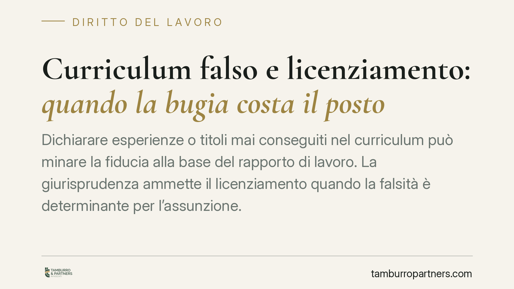
Dichiarare esperienze o titoli mai conseguiti nel curriculum può minare la fiducia alla base del rapporto di lavoro. La giurisprudenza ammette il licenziamento quando la falsità è …
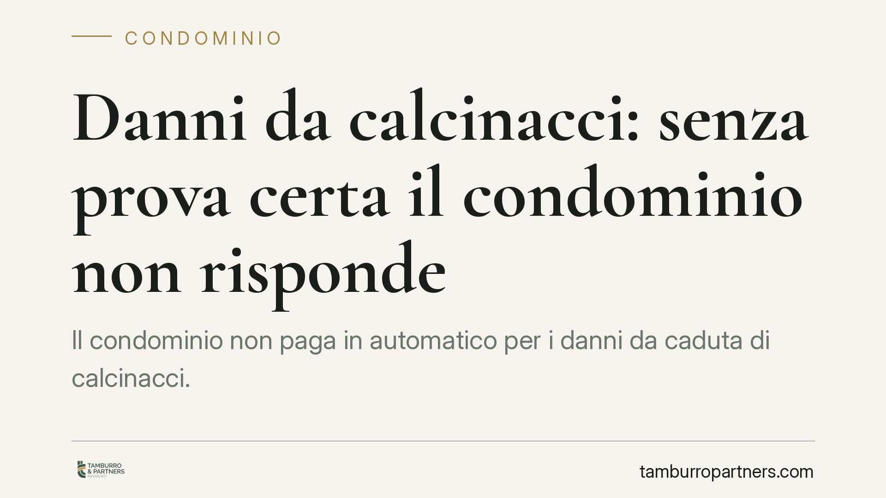
Il condominio non paga in automatico per i danni da caduta di calcinacci. Una recente pronuncia del Tribunale di Castrovillari ricorda che chi chiede il risarcimento deve provare c…
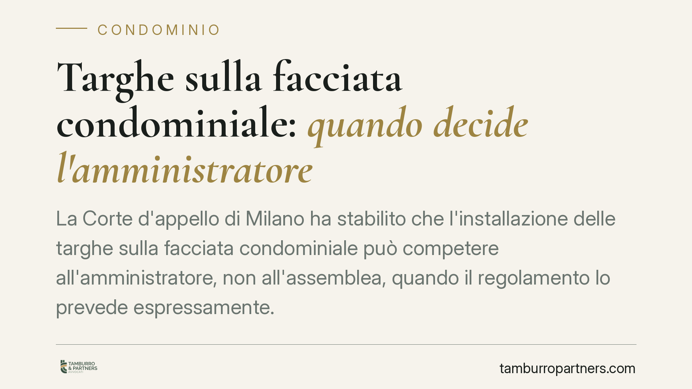
La Corte d'appello di Milano ha stabilito che l'installazione delle targhe sulla facciata condominiale può competere all'amministratore, non all'assemblea, quando il regolamento lo…
Gli indirizzi di riforma per il Terzo Settore tornano al centro del dibattito: si parla di rafforzare il reinvestimento degli utili e di riordinare il regime fiscale che coinvolge …
La Corte d'Appello di Perugia ha respinto la richiesta di una conduttrice che imputava al condominio i danni subiti dalla propria attività per il guasto dell'impianto di condiziona…
La legge italiana protegge la lavoratrice madre con congedi retribuiti e divieto di licenziamento. Ma tra norma e realtà resta un divario: penalizzazioni salariali, part time invol…
La sospensione del corso di specializzazione per maternità non dovrebbe tradursi in uno svantaggio nella progressione e nella stabilizzazione del rapporto. Il tema torna d'attualit…
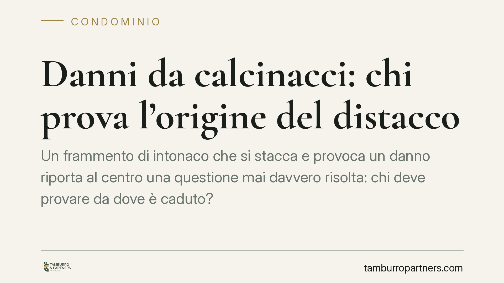
Un frammento di intonaco che si stacca e provoca un danno riporta al centro una questione mai davvero risolta: chi deve provare da dove è caduto? Una recente pronuncia di merito co…